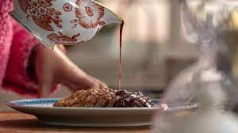

Duck Magret

Description
The magret refers to the breast of a Moulard duck that has been reared for foie gras. A Moulard duck is a cross between a Muscovy drake and a Pekin hen, and is a sizable bird with a well-developed breast. It also is the preferred duck used to produce foie gras, because of its large size and hearty constitution.
Ingredients
- 2 duck breasts
- 6 gloves of garlic
- 1 clementine
- Salt flakes q.s.
- Black pepper q.s.
- Marinade juices:
- Juice of 1 clementine
- 2 springs of rosemary
- 1 tbsp blackberry jam
- 1 tbsp of honey
- 1 cup of vegetable broth to taste
- 1 handful of flour
- 1 glass of Port wine
- 1 cup broth
Steps
- Using a mortar, crush six cloves of garlic and make a paste with a little clementine juice, salt and pepper flakes; Rub the duck breasts with this mixture and let them rest for around two hours in the fridge, covered with cling film
- hen, clean the duck breasts of excess marinade, reserving it (it will be needed for the sauce!)
- With a sharp knife, make a few cuts on the duck's skin, in the fat part, to create a beautiful diamond pattern; be careful not to cut through the fat and get to the meat
- Heat a frying pan very well and start by placing the duck breasts skin side down; Once the skin is browned, flip and cook the breasts for about another 6 to 8 minutes
- Remove from the heat, wrap in parchment paper and leave to rest in the oven at a very low temperature
- For the sauce, in the same frying pan where you cooked the duck, add the reserved marinade juices, the remaining clementine juice and rosemary; remove the rosemary sprigs and add the blackberry jam, honey, a little vegetable broth, flour and Port wine; mix very well and as soon as it boils, lower the heat and count for ten to fifteen minutes, stirring occasionally; we want the sauce to reduce and acquire a creamy texture; then strain this sauce into a container
- To serve, drizzle the breasts with this sumptuous sauce!
Enjoy!!